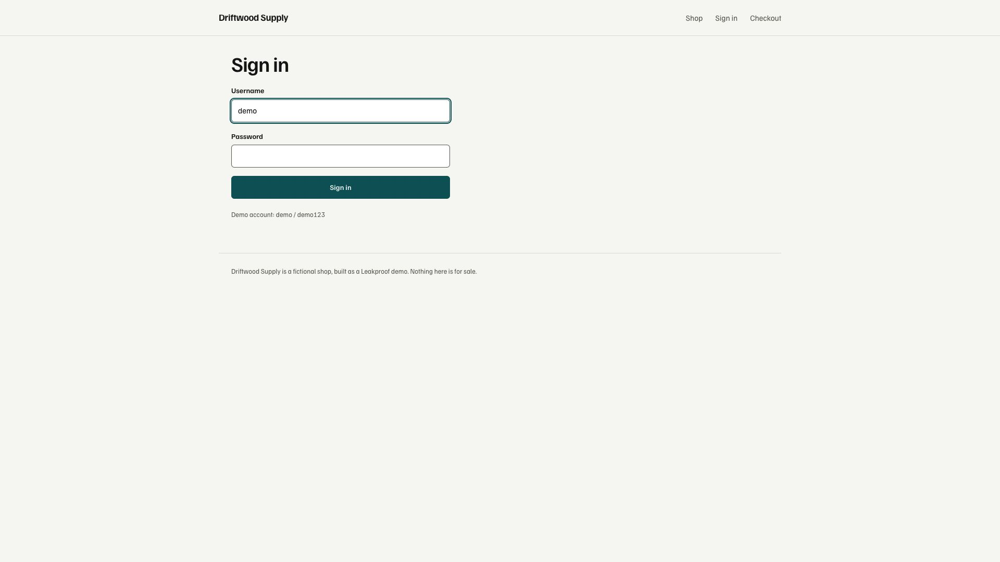

Exhibit AHidden server errors · home flowLEAKFIXED
Recommendations API returns 500 on home page
The page looks fine, but a request behind it is failing.
What Kane saw
GET /api/recommendations returned 500
Kane's diagnosis
The site’s recommendations service was unavailable while the home page loaded, so its request returned a 500 error even though the product list appeared.
Fix attempts
- 1Fixed, Kane re-run passedapp/api/recommendations/route.ts
